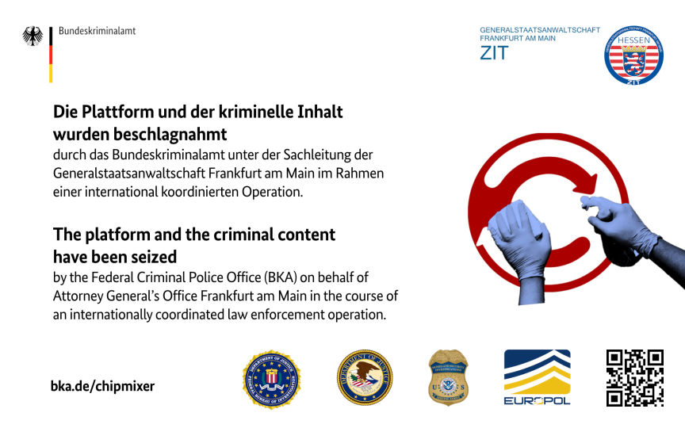
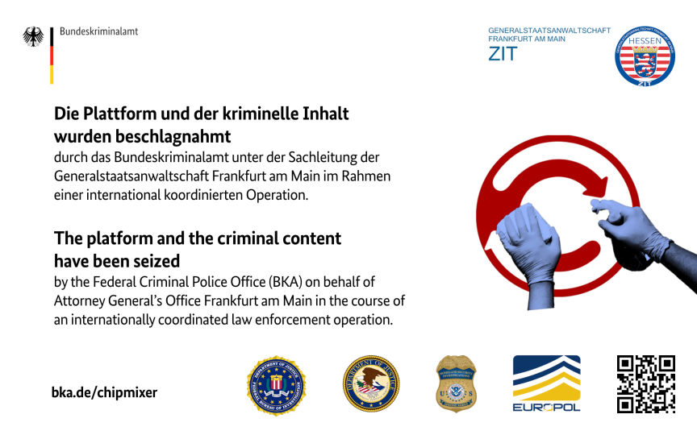

German Authorities Seized ChipMixer
~2 min read | Published on 2023-03-16, tagged Crypto-Mixer, Seized using 308 words.
The Federal Criminal Police Office (BKA) and the Frankfurt am Main Public Prosecutor's Office - Central Office for Combating Internet Crime (ZIT), in cooperation with authorities from the US, Belgium, Poland, and Switzerland, under Europol's coordination, took down the world's leading cryptocurrency mixer, "ChipMixer."

According to a press release by the Federal Criminal Police Office (BKA), the investigators seized ChipMixer's four servers on March 15, 2023. In addition to shutting down the mixer, the investigators sized approximately 1909.4 bitcoins worth over $46 million. The investigators also gained access to 7 terabytes of data.
Information acquired in the course of the operation allegedly revealed that since its inception in mid-2017, ChipMixer has been used to launder approximately 154,000 bitcoin worth approximately $3.8 billion.
The main sources of the bitcoin sent to the mixer are addresses associated with dark web marketplaces, fraudsters, and ransomware groups.
Information acquired from the takedown of Hydra Market in April 2022 allegedly revealed that of the $200 million in bitcoin deposited to ChipMixer from dark web marketplaces, $60 million was sent from addresses associated with Hydra.
The investigators also believe the mixer was used to launder stolen funds worth over $700 million in bitcoin. The funds include those stolen from FTX, Axie Infinitys Ronin Bridge and Harmonys Horizon Bridge.
Bitcoin worth approximately $17 million was linked to ransomware actors, such as Sodinokibi, Mamba, and Suncrypt. While over $35 million in bitcoin was linked to fraud shops.
The US Attorney's Office, Eastern District of Pennsylvania, charged suspected ChipMixer's operator, Minh Qu?c Nguy?n, 49, of Vietnam, with money laundering, operating an unlicensed money transmitting business, and identity theft. Nguy?n faces a maximum sentence of 40 years in prison if convicted.
ChipMixer's takedown follows the sanctioning of the Ethereum mixing service, [url=]Tornado Cash[/url] by the US Treasury in 2022. And the arrest of its developer, Alexey Pertsev, by Dutch authorities.

The seizure banner on ChipMixer's website
According to a press release by the Federal Criminal Police Office (BKA), the investigators seized ChipMixer's four servers on March 15, 2023. In addition to shutting down the mixer, the investigators sized approximately 1909.4 bitcoins worth over $46 million. The investigators also gained access to 7 terabytes of data.
Information acquired in the course of the operation allegedly revealed that since its inception in mid-2017, ChipMixer has been used to launder approximately 154,000 bitcoin worth approximately $3.8 billion.
The main sources of the bitcoin sent to the mixer are addresses associated with dark web marketplaces, fraudsters, and ransomware groups.
Information acquired from the takedown of Hydra Market in April 2022 allegedly revealed that of the $200 million in bitcoin deposited to ChipMixer from dark web marketplaces, $60 million was sent from addresses associated with Hydra.
The investigators also believe the mixer was used to launder stolen funds worth over $700 million in bitcoin. The funds include those stolen from FTX, Axie Infinitys Ronin Bridge and Harmonys Horizon Bridge.
Bitcoin worth approximately $17 million was linked to ransomware actors, such as Sodinokibi, Mamba, and Suncrypt. While over $35 million in bitcoin was linked to fraud shops.
The US Attorney's Office, Eastern District of Pennsylvania, charged suspected ChipMixer's operator, Minh Qu?c Nguy?n, 49, of Vietnam, with money laundering, operating an unlicensed money transmitting business, and identity theft. Nguy?n faces a maximum sentence of 40 years in prison if convicted.
ChipMixer's takedown follows the sanctioning of the Ethereum mixing service, [url=]Tornado Cash[/url] by the US Treasury in 2022. And the arrest of its developer, Alexey Pertsev, by Dutch authorities.